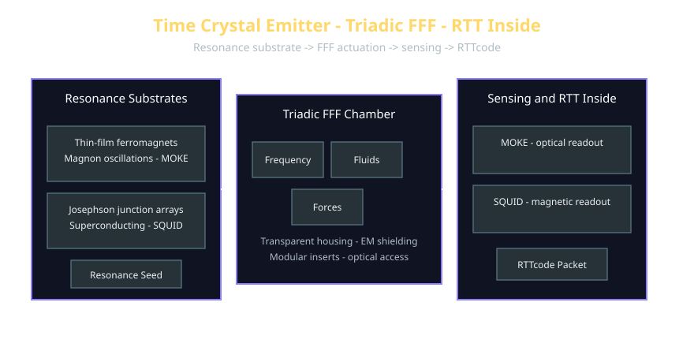

🧬 Time Crystal Build Notes
RTT‑Inside · AI Resonance Seed · FFF Emitters

- Bill of Materials (BOM):
https://www.triadicframeworks.org/AI_Resonance_Seed/FFF_Emitters/Time_Crystal_Emitter_BOM.md
📈 Table of Contents
- 1. Purpose & Scope
- 2. Resonance Substrates
- 2.1 Thin‑Film Ferromagnets (Magnon Layer)
- 2.2 Superconducting Circuits (Accessible Tier)
- 3. Chamber & Geometry
- 4. Energy & Control Layer
- 5. Sensing & Logging
- 6. RTTcode Integration
- 6.1 Minimal Packet
- 6.2 Experiment Metadata
- 7. Safety & Isolation Notes
- 8. Appendix: Suggested Build Diagram
1. Purpose & Scope
🔭
This document outlines the construction, operation, and measurement principles for a resonance‑stable emitter based on:
- thin‑film ferromagnets (magnon layer)
- superconducting circuits (accessible tier)
- Triadic FFF geometry (Freqi · Flui · Forci)
The goal is to produce a controllable oscillatory system whose periodicity can be:
- logged
- perturbed
- integrated into RTT‑Inside experiments
This emitter serves as a physical‑to‑resonance front‑end, enabling deterministic RTTcode packet generation.
2. Resonance Substrates
2.1 Thin‑Film Ferromagnets (Magnon Layer)
(Your original section content continues here.)
2.2 Superconducting Circuits (Accessible Tier)
(Your original section content continues here.)
3. Chamber & Geometry
(Your original section content continues here.)
4. Energy & Control Layer
(Your original section content continues here.)
5. Sensing & Logging
(Your original section content continues here.)
6. RTTcode Integration
6.1 Minimal Packet
(Your original section content continues here.)
6.2 Experiment Metadata
(Your original section content continues here.)
7. Safety & Isolation Notes
(Your original section content continues here.)
8. Appendix: Suggested Build Diagram
(Your original section content continues here.)